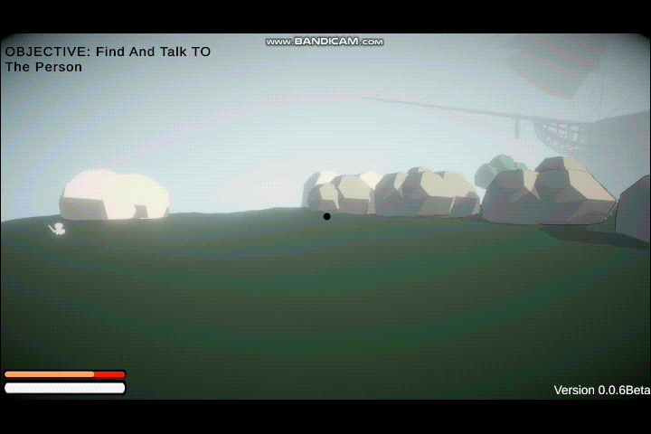
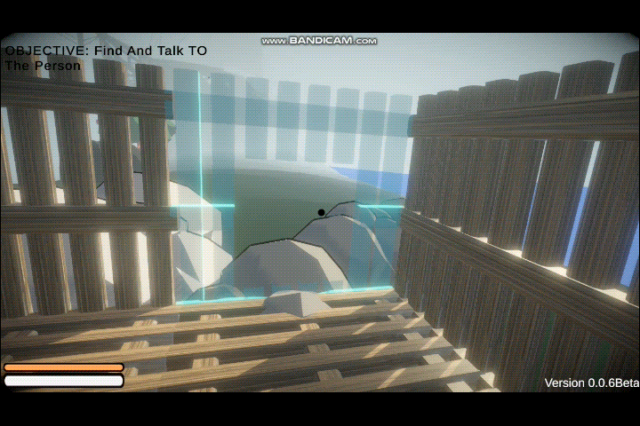
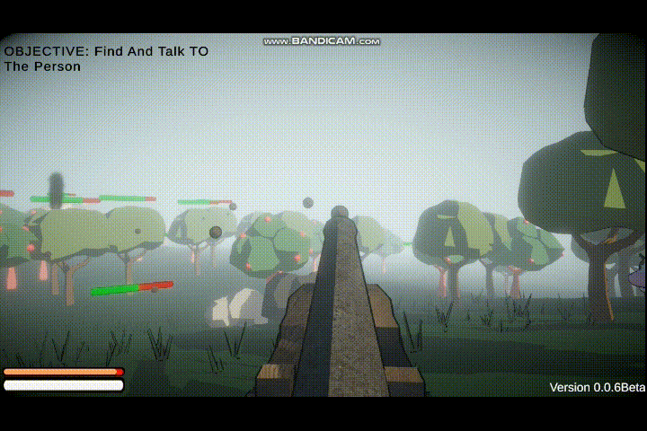
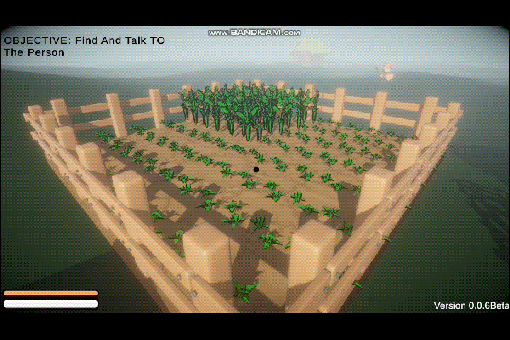
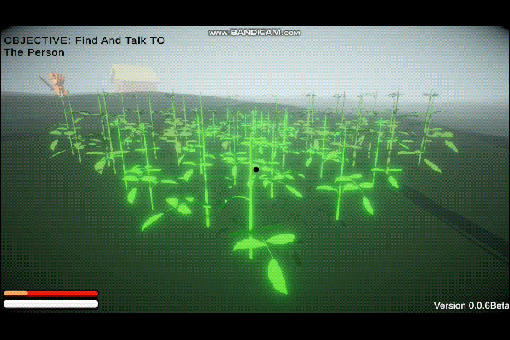
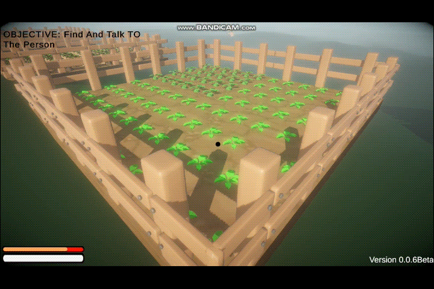
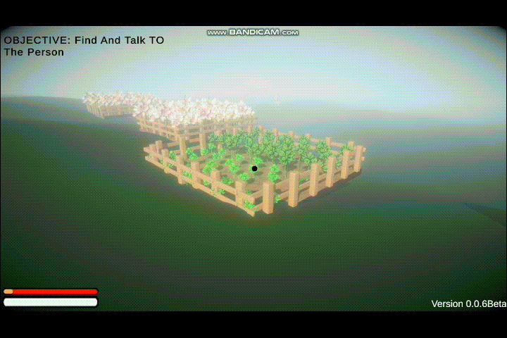
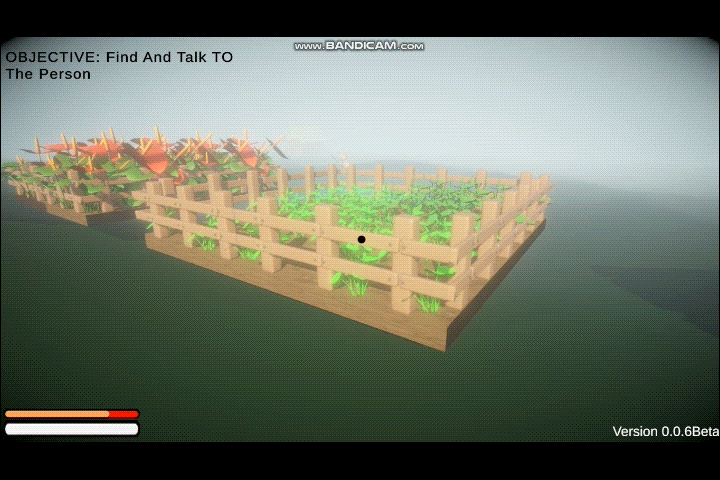
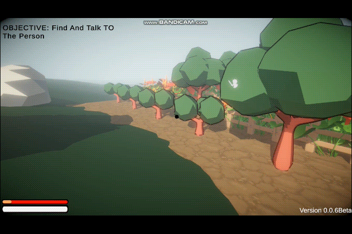

Version 0.0.6 - Patch Notes (download at the botton)
This is a big patch. I have worked on a lot of stuff in this patch such as refining the building system, Player movement, adding crops, adding some animations ETC.
Player Movement
First, let's go over the player movement. The player movement was just a static cylinder sliding around with nothing but a walking which felt like running... So I added some necessary feel to it.
Here's what I added to the movement:
- Sprinting
- Tilting Sideways
I have added sprinting now to make the movement a little complex and to raise the difficulty a bit
To liven things up a bit, I made it so when you go sideways the camera tilts a bit to the direction you are headed

Building Blocks
I have overhauled the building system. The grid system wasn't accurate and would ruin your builds with inconsistent grid size. Now the grid system is fixed and refined. I have also remodeled all the existing building blocks. They all have proper placing animations and can be chopped down which you couldn't do before.
Here are all the blocks I added/modified below:
- Oak Walls
- Oak Floors
- Dirts
- Oak Stairs
- Oak Window 
- Fences
- Cannons


Okay cannons are actually interactive, and let's just say they are quite overpowered at the moment...
Crops
This patch is a big one as this is the version where we introduce you to farming. There's really no use for this yet, but at least they go well with dirt and fence!
- Wheat 
- Tomatoes 
- Potatoes 
- Apple Tree
- Flower1 
- Flower2 
YES! AT LAST YOU CAN PLACE TREES!!!!
Bug Fixes
- Fixed a critical bug that caused crashes during gameplay.
- Addressed issues with character animations.
- Resolved multiplayer connectivity problems.
- Fixed a critical bug that caused crashes during gameplay.
- Addressed issues with character animations.
- Resolved multiplayer connectivity problems.
- Fixed a critical bug that caused crashes during gameplay.
- Addressed issues with character animations.
- Resolved multiplayer connectivity problems.